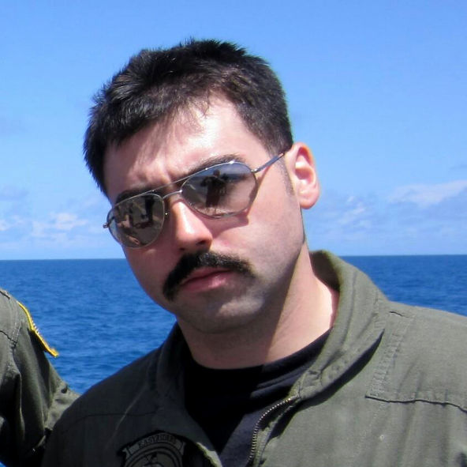

The Rivadeneira Wedding


The Wedding Party
Bridesmaids
Nicole Kousoulas - Maid of Honor
Kristen met Nicole at Cloonan Middle School when the Vahsens moved to Connecticut in 1998. They quickly became friends and have been close ever since. When Kristen and Nicole were younger, they thought being friends for 3 or 4 years was such a long time-- now they've been best friends for 15 years and she is going to be Kristen's maid of honor! Nicole has always been a very reliable friend and is always there when Kristen needs her, which is mostly during happy hour these days, since they're now both in New York City.
Katherine Vahsen - Bridesmaid
Katherine is Kristen's younger sister; currently a sophomore at Westhill High School. Their relationship has evolved quite a bit over time- Kristen used to take care of Katherine when she was a baby, and now they swap tips on hair and makeup while shopping the afternoon away. Katherine is a very loving sister to both Nick and Kristen, and they are looking forward to taking lots of pictures with her on the big day!Nerissa Ignacio-Littman - Bridesmaid
Nerissa is Nick's sister and Kristen's future sister-in-law! She is always the first person to step forward and lend a helping hand when you need it and is someone you can really count on. Nerissa is extremely creative, and having gotten married last Fall, has been so helpful with the wedding planning already! Nerissa can be credited for finding the wedding venue that Kristen and Nick love so much.Kim Maiolo - Bridesmaid
Kim is Kristen's sorority sister and roommate from Penn State, having lived together both Junior and Senior year of college. Kim introduced Kristen to the wedding shows on TLC that they admittedly watched way too much of together in between classes. Kristen always feels like she's back in college when she visits Kim, whom currently lives in Pennsylvania with her husband, and is making her way in the P.R. world.Jessica Sclafani - Bridesmaid
Kristen met Jessica at her first job in high school, where they were cashiers together at Giovanni's Market in Stamford. They always have the greatest catch up sessions, as they've only been able to see each other every few months after Kristen graduated high school. Jessica is probably the sweetest and most sentimental person Kristen knows. Jessica will be the one telling Kristen it's ok to cry on the wedding day and knows she'll be right there with her.
Sarah Rudnick - Bridesmaid
Kristen also met Sarah at Giovanni's Market, where they worked together for three years. When Kristen, Sarah and Jessica were assigned to work together, it was more social hour than work. Sarah is very outgoing and is always inspiring Kristen to try new things. Sarah is currently a co-owner of a startup publishing company in Washington D.C., dedicated to promoting literary development for children, where she's putting her amazing writing talent to great use!Groomsmen
Jason Kahen - Co Best Man
Jason and Nick became friends in their boy scout days, when setting things on fire and peeing in the woods was wildly entertaining. Since those years, Jason has grown from a crazy and rowdy kid to a mature and thoughtful man. As Nick and Jason grow together in their careers, they find that their old hobbies of setting things on fire and peeing in the woods is now only moderately entertaining.
Rob Mui - Co Best Man
The day Rob overheard Nick speaking about Starcraft strategies in middle school was the day the two knew he'd be standing at Nick's side on his wedding day. Rob is credited with having an excellent sensibility about him, declining to follow in some of Nick's more daring adventures. While Nick and Rob no longer spend their time saving the world from alien invasions, Rob spends his days protecting the greatest city in the world as a shining member of New York City's finest.Scott Carley - Groomsman
Scott is Nick's oldest friend, having been the first person to join in on one of Nick's earliest ventures - drawing people's initials in graffiti letters and selling them for a profit. Or sticks of gum. Or erasers. Really, they took whatever their classmates offered. Through the years Scott has stuck by Nick's side as one of his most loyal friends. Today, Scott joins Rob in keeping the streets of NYC clean as a newly minted NYPD recruit.

Ryan Miller - Groomsman
Having met in high school, Ryan and Nick had already shed their immature hobbies and found common ground over more mature interests. That is to say, settings things on fire, video games, Dragonball Z, and doing donuts in parking lots. As a pilot in the Navy, our government has had the good sense to entrust him with a multi-million dollar helicopter. Despite their shenanigans, Nick has always thought Ryan one of his most intelligent friends, and nowhere is that more evident than in the amazing wife and daughter he's been blessed with.
Nick Avagliano - Groomsman
Nico, as the family affectionately calls him, is a cousin, but more like a brother to Nick. With their cousin Mikey, their early years were spent as a dangerous trio, terrorizing their grandmother's house, vases, and furniture. No fragile item was left unturned in their adventures, and in return the family ensured that no bottom was left unspanked. Since those days, Nico has matured into a responsible adult and now works at a high-growth startup in NYC. They keep the vases on the other side of the building.